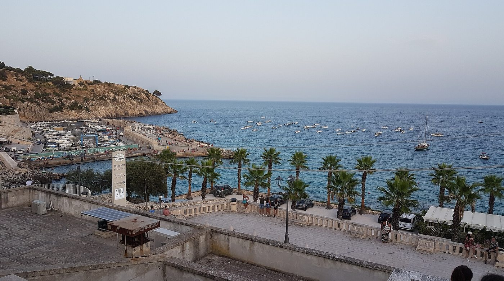
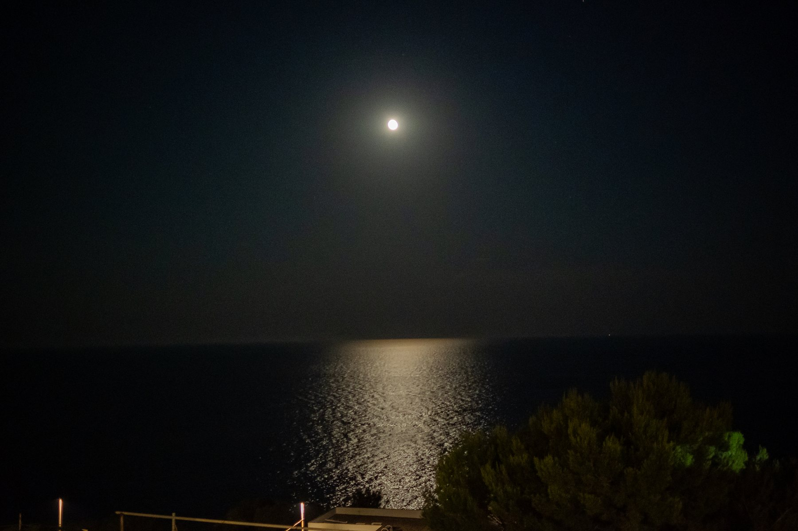

Castro
A unos 10 minutos en cocheEl puerto, las cuevas marinas y la Zinzulusa: el pueblo más cercano, al que los invitados bajan a bañarse.
Besado por el sol, mecido por el mar y acariciado por una brisa ligera, el Salento es uno de los rincones más queridos de Italia. En el extremo inferior de la península, esta larga franja de tierra llana toca dos mares: el Adriático al este, el Jónico al oeste.

Con más de 500 plantas autóctonas del monte mediterráneo salentino
Con una vista impresionante del Adriático y los Balcanes en el horizonte
Rodeado de un pinar de 500 años, con olor a resina y salitre
Encajada en la roca salentina, frente al horizonte adriático
Construida con carparo de las canteras locales, auténtica piedra de Lecce
Un día de vacaciones en una de las regiones más bellas del mundo
Santa Cesarea Terme son también playas y aguas cristalinas en las que sumergirse en el calor del verano: calas rocosas encajadas entre altos acantilados calcáreos, con aguas de un azul extraordinario. Y cuando cae el sol el mar no deja de sorprender: en las noches de luna llena la estela plateada llega hasta debajo de la terraza.
Elegir casarse en el Salento significa regalaros y regalar a vuestros invitados un día de vacaciones en una de las regiones más bellas del mundo.
Cala dei Balcani reúne todo eso: un lugar donde naturaleza, historia y belleza se encuentran.
Descubrir la finca
Quien viene a vuestra boda no viene solo por un día. Desde Cala dei Balcani se llega en poco tiempo a algunos de los lugares más bonitos de Apulia: un motivo más para que vuestros invitados se queden unos días más.
Fotos de los pueblos: Bultro (CC BY-SA 4.0); Carlo Pelagalli (CC BY-SA 3.0); Benjamin Smith (CC BY-SA 4.0) — Wikimedia Commons, CC BY-SA. Las demás imágenes son de Cala dei Balcani.